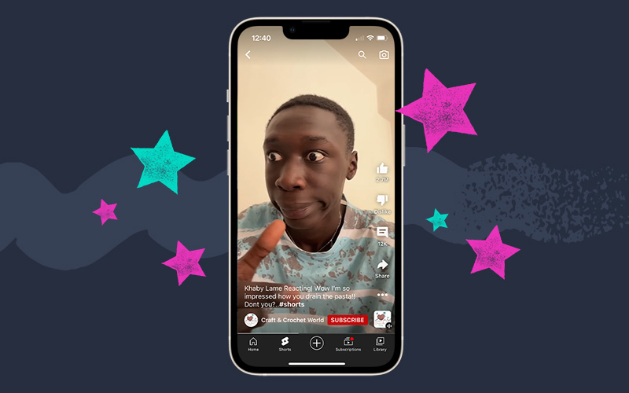
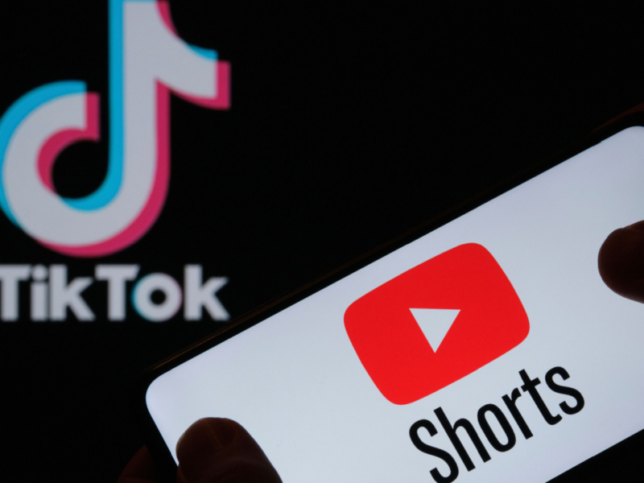

YouTube Shorts is a new function that was launched by YouTube in
2020. It allows users to create and upload short videos with a
maximum of 60 seconds. It is a function that the similar to other
popular video platforms such as TikTok and Instagram Reels.
Because the short video platform has the characteristics of
sliding, it is easy for users to watch new videos continuously,
and it is easy to attract traffic. It attracts many Youtuber to
make YouTube Shorts with clips of their video or new content to
attract new audiences.

Actually, TikTok is the video platform that first sparked the
trend of short videos. When YouTube Shorts do not yet come out,
TikTok has already over 1 billion active users and become the most
popular video platform in the world. And TikTok became the biggest
threat to youtube at that time, so Youtube launched Youtube shot
to compete with it. In fact, most of the videos on Youtube Shorts
are carried from TikTok, which shows that TikTok is still the
mainstream short video creation platform.
Both platforms provide editing tools and effects to create short
videos, but TikTok also includes effects and filters which let
user can produce more creative and attractive videos.
Creators not only can earn money through profit from videos, but
also has many ways for creators to make money, such as
sponsorship, brand cooperation, live streaming, etc. Although
YouTube shorts have a profit system, it is not perfect.
TikTok is a short video platform originally, the audiencebases are
users of short videos. Therefore, the audience base willbe more
willing and fond of watching. On the contrary, YouTube is a video
platform that mainly focuses on live streaming and long-form
videos originally. So the adding function of Shorts would be
controversial for the audience.
In order to compete with the short video platforms that have
emerged in recent years, Youtube has added Youtube Shorts.
Although it is still inferior to TikTok in many aspects. However,
Youtube still has the characteristics of a wide range of
functions, and short videos are already widely popular all over
the world. In the future, the development of Youtube Shorts will
become more mature and bring more users to Youtube.
 Editing tools:
Editing tools: Commercialize:
Commercialize: